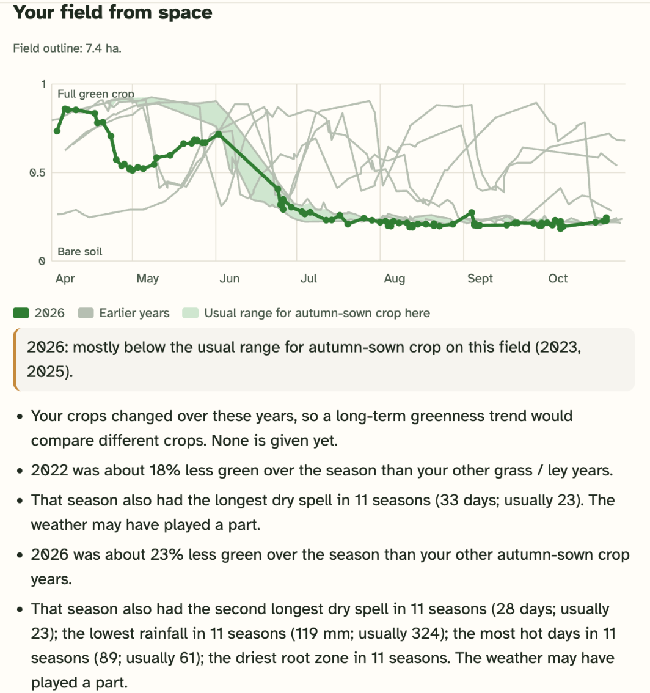

Evidence for what to plant, when, and in what order, from 45 years of NASA weather and every satellite image of your field.
THE CHALLENGE
One field, a shifting climate, and decisions that reach years ahead
01
This year’s crop shapes the soil, pests and yields of the years that follow.
02
Frosts, dry spells and heat no longer arrive when the farm was planned for them.
03
NASA has the records, but they are scattered and hard to turn into a decision for one field.
ROTATION LAB
HOW IT WORKS
Built on open NASA data
NASA POWER · DAILY · 1981–TODAY
Weather and soil wetness
45 years of daily records for the field’s location.
NASA HLS · 30 M · SINCE 2020
The field’s satellite record
Every Landsat and Sentinel-2 image of the outlined field, clouds removed.
NASA POWER · CLIMATOLOGY
Long-term normals
Is this month unusual for this place?
NASA GIBS
Map layers
Greenness, soil moisture, rain and land temperature for context.
Plus FAO-56 crop science, ESA WorldCover for the farmland around the field, and what only the grower knows: outline, soil, drainage, irrigation, crops.
ROTATION LAB

THE FIELD FROM SPACE · HUNGARY
A weak season, and the weather behind it
01
2026 fell below this field’s usual range for an autumn-sown crop: 23% less green.
02
That season had the lowest rainfall in 11 years (119 mm, usually 324) and the most hot days.
03
2022 was 18% below too, in the longest dry spell on record. Both found from NASA data alone.
A crop is compared only with earlier seasons of the same crop.
ROTATION LAB
THEN AND NOW · 1990s VS THE LAST TEN SEASONS
What has changed on these fields
+18 days
Frost-free season, Stjørdal, Norway (133 → 151)
12 days
earlier last spring frost, Stjørdal (25 May → 13 May)
7 → 12
potato blight-weather days a season, Stjørdal
40 → 62
days above 30 °C a season, Orosháza, Hungary
Stated only when the whole 1981–2025 record trends the same way. No good-or-bad labels: that depends on the grower’s crops.
ROTATION LAB
HONEST BY DESIGN
Evidence and options, not orders
CHECKED
Against official statistics
Crops around Stjørdal vs Statistics Norway: grass 42% vs 46%, cereals 45% vs 52%.
SAYS WHEN IT CAN’T TELL
No confident guesses
“Not judged”, “too few seasons”, “crops changed”, always with the reason.
GROWERS DECIDE
Their plan, their call
Likely crops are hints; the grower’s own rotation is what gets checked.
OPEN AND FREE
Free, no account
Any temperate field on a laptop, even offline; two demo fields online.